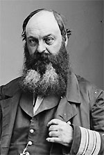

|

|

|
|
|
Civil War admiral David Dixon Porter was destined for naval
service. As the son of Commodore David Porter and Evelina
Anderson Porter, he frequently joined his father on
expeditions, including a mission against Caribbean pirates
in 1824. In 1829 Porter joined the United States Navy and
began his own distinguished naval career. He rose through
the ranks, and was promoted to commander when war broke out
in April of 1861.
Throughout the Civil War, the U.S. Navy was given
responsibility for cutting off Southern commerce, according
to the "Anaconda Plan" of General Winfield Scott Hancock.
For the first several years of the war, Porter played an
important role in making the Northern blockade a reality.
Porter's most important contribution came in March of 1862,
when he joined his foster brother, Admiral David Glasgow
Farragut, in an attempt to capture the crucial Southern port
of New Orleans, Louisiana. Porter commanded several mortar
boats that were responsible for shelling Forts Jackson and
St. Philip. When the forts fell, New Orleans was open to
capture by the Northern military. The victory was a critical
step in the Union's goal, ultimately successful, to control
the Mississippi River.
Porter's success led to his promotion in September of
1862 to command of the Mississippi Squadron as acting Rear
Admiral. In that capacity, Porter worked with General
Ulysses S. Grant and his troops to take the Confederate
stronghold of Vicksburg, Mississippi in 1862 and 1863.
Porter took part in one of the first failed attempts to
skirt the fortifications at Vicksburg. He led his boats on a
treacherous attempt to navigate the lower Yazoo to Steele's
Bayou, but the ships foundered in the narrow waters filled
with trees and debris. Porter's fleet was nearly destroyed
by Confederate forces, and he had to call in ground help to
rescue his naval force. Ultimately, Porter redeemed himself
with a daring midnight run past blazing Confederate
batteries on April 16, 1863. Porter's fleet of ships
successfully delivered Grant's troops to a location past the
city, allowing them to march on and seize the Mississippi
capital of Jackson. This cut off Vicksburg's supply lines,
and made the fall of the city almost inevitable.
In October of 1864, Porter was promoted to command of the
North Atlantic Squadron. Shortly after assuming his new
command, Porter again found himself in a tough spot, this
time during General Nathaniel P. Banks' Red River Campaign.
Porter's forces just barely escaped destruction by
Confederates after becoming stranded by the low water level
in the Red River. Quick action by Lieutenant Colonel Joseph
Bailey and his engineering brigade was all that saved Porter
and his men. Bailey designed dams along the River so as to
raise the water level enough to allow Porter's ships to run
the treacherous Alexandria Rapids and escape.
In the fall of 1864, Porter led the war's largest fleet
of ships against Fort Fisher, the garrison that guarded the
entry to Wilmington, North Carolina. Porter's first
shelling attempt did little damage, but a renewed attack
allowed General A.H. Terry's forces to storm and seize the
Fort on January 15, 1865.
After the Civil War, Porter remained in the Navy, and he
was named Superintendent of the United State Naval Academy,
a position he held from 1865-1869. While Superintendent,
Porter helped to reform the curriculum and expand the
facilities at the Academy. Porter was promoted to the rank
of Vice-Admiral in 1866 and Admiral of the Navy in 1870. He
died in Washington, D.C. on February 13, 1891.
Source: Joan Waugh, ed., Facts on File Encyclopedia of American
History: Civil War and Reconstruction, 1856 to 1869 (New York: Facts on
File, 2003), 280-281.
|